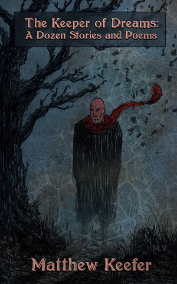

KEEPER OF DREAMS
The new book by Matt Keefer

About the book...
Time travel, Shahrazad, the kiss of death. The Keeper of Dreams: A Dozen Stories and Poems, are stories of philosophical speculation, a literary fusion of realism and surrealism, much in the vein of Spielburg's television series Amazing Stories and Nabokov's Invitation to a Beheading. The title story is about a high school failure who slips into a coma and passes through an unfamiliar town as a ghost, albeit with the powers of Death. He must perform Death's services under the direction of another unnamed spirit, even when he is most unprepared to do so. The Sentence follows the disintegration of two women who are shackled onto the ruddy soil of the Nevada desert. Who are they, and what is their crime? Is justice possible when the human body – with blood and blisters and shit – must be rent of its life? Spanning subjects such as crumbling musicians and a distant, self-indulgent future, this first collection of new and previously published pieces are snapshots of lives brought to the precipice.
About Matt Keefer...
Matthew Keefer is an Emerson College grad student dropout and lives north of Newport, RI. He was a reporter for the Newport Mercury and has written for the Newport Daily News. His stories have been published on Ducts Webzine and Fictionaut, and he maintains an indie music blog. He is editing his first novel, The Heartless, and is writing his second, The Fish and the Flood: A Fairy Tale.
A Q&A with the author...
Q: You write short stories and novels. Which do you prefer, and why?
A: Whether it's the length of a short story or a novel is kind of irrelevant. It's just the length a story should be. I've found that my novels tend to be more realistic – not day to day stuff – as opposed to short stories which tend to be a twist on the conventional elements of life. A twist on the laws of physics. Like the short story “A Stitch in Time,” which starts in the future. Or “Madness of the Gods,” where you have basically a normal setting, but something is off about that because a guy is able to find the physical representation of God.
Q: What are your literary influences?
A: I try to keep them to a minimum. I don't really have that many influences as far as I know, but I've read quite a bit. My favorite book is Nabokov's Invitation to a Beheading, and I think that's really apt for these stories because there's an element of magic and surrealism to that book. And some of these stories have that surreal element where things seem normal and ordinary but then you pull back and something twists and it's no longer a normal reality.
Q: Do you write from life experiences, or where else does your inspiration come from?
A: One of the stories, “The Sentence,” is from an actual newspaper clipping. So whatever comes across my plate is open game for any story I may want to do.
What was the newspaper clipping that inspired you to write about two women being chained in the desert?
I don't want to reveal the details, but it's a crime that was committed. But the life experiences part: I think the way that factors in is, most people think that you're a taxi driver, so you write about taxi drivers. I don't think it's like that. I think it's more like: you're a taxi driver, and you have this particular feeling of being crushed by this really brutal job, and you're going to take that feeling of being crushed and apply it to something else, like you're going to write about a Wal-Mart employee. I think that's the way writing should be. You should be able to take a feeling that you know very well, extrapolate it, and put it somewhere you're not familiar and learn something new about it.
Q: What lessons or ideas do you hope your readers take away from your work?
A: First of all, I think I want them to be surprised. I think I want them to read something like “Madness of the Gods,” read it through, and then hit the ending and tilt their head and go, “huh, I never really thought of that.” That's the main thing that I want the reader to do because I think a lot of literature doesn't tend to do that, especially [new] literary literature. It tends to be very flowery, and very verbose, adjective-laden, and it's not interesting to me unless there's something new going on. I think [lessons are] the other thing that's missing from literary literature, is that there isn't necessarily a lesson to be learned. Or that it's a very weak lesson compared to what the prose is supposed to be. I think some of these stories I want to have a very clear moral, because my mom always said it's important to have that part of the story. I think it gives it depth. And a lot of stories have the two dimensions, they're written well and they have interesting characters, but if they don't have something that your reader can take away as a lesson, and I feel a lot of new literature doesn't, then it doesn't have that third dimension of depth. These stories, I feel like they have that third dimension.
Contact
Charlie McDonough
Big Fiction PR
(401)266-4428
cmcdonough421@gmail.com
More Matt